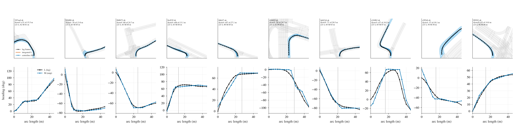
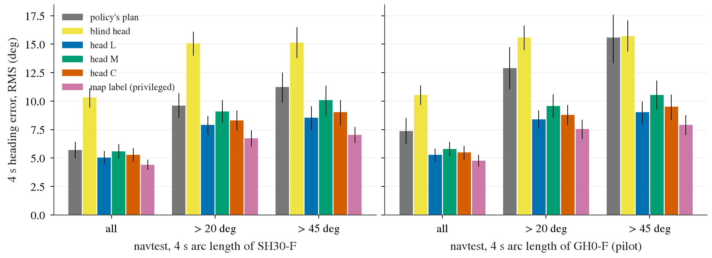
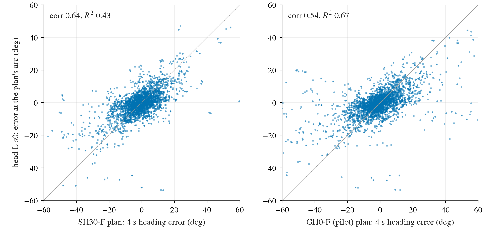
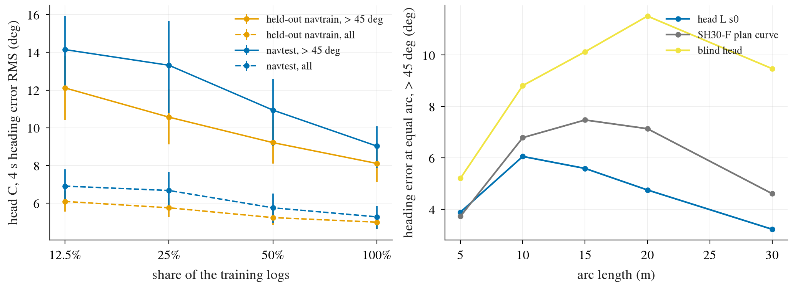

2026-10-10，实验线 HEAD1，决策 243，接决策 240 与 204。全部是离线读数：没有把任何信号喂给驾驶模型，没有解冻视觉编码器，没有闭环。地图、日志的未来轨迹只用作训练标签和分析参照；预测头推理时只读冻结的视觉特征、自车状态和导航指令。预登记在任何读数之前提交。数字来源：experiments/corridor/results/head1.md、results/head1/tables.md、results/head1/gate.json。用了 1.1 卡时。
标签是一条与车速无关的曲线：从当前位置往前，每隔 2.5 米（到 40 米，之后稀疏到 80 米，共 22 个点）记下道路朝向相对当前车头的夹角。有两个来源。日志标签：把日志里车实际走过的路径按行驶距离重新排列，停车和跟慢车都不改变它。地图标签：日志所走车道序列的中心线朝向（决策 240 的匹配方法）。训练时前者泄漏司机走的路径，后者泄漏地图、定位和每个岔口选的出口；推理时两者都不需要。
预测头约 340 万参数，读 8 帧冻结视觉特征加自车状态和导航指令，输出这 22 个点。训练用 navtrain 的 834 个日志，另 89 个日志只用来选训练步数；评测用训练时完全没见过的 245 个 navtrain 日志（21 438 帧）和 navtest（136 个日志，12 146 帧）。日志的划分与决策 191 的交叉拟合驾驶模型完全相同，所以在留出日志上预测头和驾驶模型都没见过数据。用哪种标签的预测头只在留出的 navtrain 日志上选，不看 navtest。
主读数与决策 240 相同：在驾驶模型自己规划的 4 秒行驶距离处读预测曲线，与日志 4 秒时的真实朝向比较。区间都是按日志整体重抽样的 95% 区间。

| 判定线（测试集） | 读数 | 是否满足 |
|---|---|---|
| 准确：转角超过 45 度的帧上，预测头的误差低于全量驾驶模型自己的规划，区间不含零 | 8.54 度对 11.24 度，差 −2.70 [−3.57, −1.74] | 是 |
| 高于下限：同一批帧上低于不看图像的同款预测头，区间不含零 | 差 −6.59 [−7.66, −5.51]（不看图像 15.13 度） | 是 |
| 独立：对试验规模驾驶模型，全部帧上独立性指标不低于 0.538 | 0.513 [0.420, 0.586]，相关系数 0.53，换算增益 +0.48 分 | 否（边缘） |
读法：独立性指标的含义是「用预测头与规划之间的分歧，能线性解释掉规划朝向误差方差的多大比例」。线的来历是决策 204：给驾驶模型喂带独立噪声的信号时，噪声与模型自身误差之比为 0.39、0.79、1.57 时拿到的增益是无噪声时的 86%、62%、22%，而这个指标在独立噪声下正好是 87%、62%、29%；对决策 204 里那个没用的预测头，同一指标（沿行驶方向的误差）是 0.084，乘以那里完整信号的无噪声增益 +1.38 分得 +0.12 分，当时实测 +0.09 分。所以预期增益约等于无噪声增益（只给路径形状时 +0.93 分）乘以这个指标。这条换算在本线没有用训练去验证。同一预测头换一个随机种子是 0.447，没有哪种标签、哪个种子达到 0.538。

| 驾驶模型 | 帧 | 规划自己的误差（度） | 预测头的误差（度） | 差值 | 误差相关系数 | 独立性指标 | 换算增益（分） |
|---|---|---|---|---|---|---|---|
| 全量（SH30） | 全部 | 5.71 | 5.05 | −0.65 [−1.03, −0.25] | 0.67 | 0.278 [0.205, 0.344] | +0.26 |
| 全量（SH30） | 转角超过 20 度 | 9.59 | 7.91 | −1.68 [−2.37, −0.97] | 0.66 | 0.351 | +0.33 |
| 全量（SH30） | 转角超过 45 度 | 11.24 | 8.54 | −2.70 [−3.57, −1.74] | 0.64 | 0.433 | +0.40 |
| 试验规模 | 全部 | 7.38 | 5.27 | −2.10 [−2.87, −1.32] | 0.53 | 0.513 [0.420, 0.586] | +0.48 |
| 试验规模 | 转角超过 20 度 | 12.90 | 8.41 | −4.50 [−5.84, −3.07] | 0.53 | 0.584 | +0.54 |
| 试验规模 | 转角超过 45 度 | 15.60 | 9.02 | −6.57 [−8.20, −4.75] | 0.54 | 0.666 | +0.62 |
读法：测试集，每个驾驶模型两个随机种子合并（全部帧 24 292 个样本，超过 45 度 3 034 个）。登记的独立性读数只有「试验规模、全部帧」那一行，其余是描述。留出的 navtrain 日志上（交叉拟合的驾驶模型）结论相同：超过 45 度 7.93 度对 9.90 度，差 −1.97 [−2.63, −1.29]，独立性指标 0.381。
误差的构成：把日志的真实曲线放到规划的行驶距离处去读，本身就差 5.26 度（超过 45 度，全量模型），这是驾驶模型走多远估得不准带来的，预测头按同样的距离读，自然共有这一部分。按日志真实的 4 秒距离读，预测头在超过 45 度的帧上是 7.49 度。在相同的行驶距离上比较，5 米处预测头不比规划好（3.89 度对 3.73 度），10、15、20、30 米处分别好 0.73、1.88、2.38、1.38 度：它赢在弯的后半段，即弯在哪里结束、出弯朝哪。

| 帧（测试集，全量驾驶模型） | 样本数 | 预测头入弯偏晚（米，中位 / 均值） | 规划入弯偏晚（米，中位 / 均值） | 偏差绝对值：预测头减规划（米） |
|---|---|---|---|---|
| 转角超过 45 度 | 3 032 | +0.10 / +0.12 [+0.03, +0.21] | +0.40 / +0.46 [+0.36, +0.54] | −0.11 [−0.19, −0.03] |
| 其中规划「转不过去」的帧 | 75 | +0.90 / +1.22 [+0.79, +1.65] | +1.50 / +1.66 [+1.36, +1.98] | −0.36 [−0.67, −0.02] |
读法：把朝向曲线沿行驶距离前后平移去对齐日志曲线，平移量为正表示入弯晚。预测头几乎没有系统性的偏晚（+0.1 米），规划偏晚约 0.4 米；但在规划转不过去的那些帧上，预测头自己也偏晚 0.9 米，这类失败大半是两者共有的。这里的平移是在朝向曲线上、2.5 米间隔的点上拟合的，与决策 240 在位置上拟合得到的 0.55 米不是同一个量；「转不过去」一行只有 75 个样本、26 个日志。
| 标签 | 留出 navtrain 日志，超过 45 度（度） | 测试集，超过 45 度（度，两个种子） | 独立性指标（对试验规模模型，全部帧，两个种子） |
|---|---|---|---|
| 日志路径 | 7.93 | 8.54 / 9.47 | 0.513 / 0.447 |
| 两种一起学 | 8.11 | 9.03 / 9.70 | 0.473 / 0.440 |
| 地图中心线 | 9.26 | 10.07 / 10.53 | 0.427 / 0.390 |
读法：地图中心线本身离日志的真实朝向就有 7.04 度的偏差（车实际走在中心线内侧，见决策 240），在它上面训练的预测头把这部分偏差叠在自己的误差上。决策 240「中心线的朝向比规划准」仍然成立（7.04 度对 11.24 度），但拿它当训练标签不如直接用日志路径。
| 训练日志数 | 留出 navtrain 日志，超过 45 度（度） | 测试集，超过 45 度（度） | 测试集，全部帧（度） | 独立性指标（对全量模型，全部帧） |
|---|---|---|---|---|
| 105（12.5%） | 12.11 | 14.14 | 6.91 | 0.052 |
| 209（25%） | 10.56 | 13.31 | 6.67 | 0.074 |
| 417（50%） | 9.21 | 10.94 | 5.76 | 0.151 |
| 834（100%） | 8.11 | 9.03 | 5.28 | 0.228 |
读法：两种标签一起学的预测头。用四分之一的日志时它还不如全量驾驶模型自己的规划（13.31 度对 11.24 度），之后两次翻倍都在明显下降，曲线没有变平。全量训练的最佳步数也落在最后 500 步内，训练本身没有收敛。
